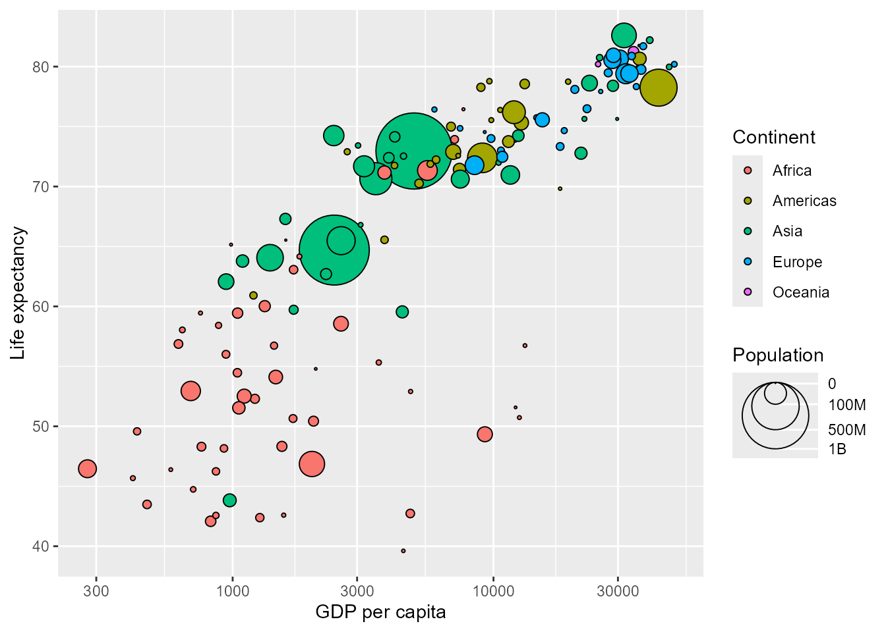

I now have the awkward pride of announcing a fresh update to an already new package, barely a month after its release. On the one hand I did a little bit of future-proofing, hopefully preventing it from being kicked out of CRAN in the next half year. On the other hand, I also developed a few features that I’m excited to share!
Bubbles
The first thing I’d like to parade around is a new standalone guide for the size aesthetic. The guide_circles() function lets you build a guide that displays the size of points as a series of rings. Simultaneously is source of frustration, but also a neat thing is that this guide uses actual points drawn by the layer glyph function. Taking the correct measurements of points and aligning them was a bit fussy to develop, but at least for circular points, it should work as you’d expect!
Code
library(legendry)#> Loading required package: ggplot2gapminder::gapminder |> dplyr::filter(year ==max(year)) |>ggplot(aes(gdpPercap, lifeExp, size = pop, fill = continent)) +geom_point(shape =21) +scale_size_area(# Note that we need irregular breaks because we scale area, not radiuslimits =c(0, NA), max_size =20,breaks =c(0, 100, 500, 1000)*1e6,labels =c(0, "100M", "500M", "1B"),guide =guide_circles(vjust =1) ) +scale_x_log10() +labs(x ="GDP per capita",y ="Life expectancy",fill ="Continent",size ="Population" )

I hasten to mention that I’m not the first to develop such a guide, but I think that this is the first version that is implemented as a ggplot2 guide. See scatterpie or mapsf for other implementations.
Trees
The next addition in this release is a guide for dendrograms. There are plenty of better packages to plot dendrograms for the sake of dendrograms, like dendextend. Instead, legendry now has a new scale/guide pair whose job it is to display dendrograms as axis annotations. I’ve personally enjoyed these annotations in combination with heatmaps.
The new scales scale_x_dendro() and scale_y_dendro() accept a <hclust> object generated from the eponymous function. The scale itself just ensure that discrete categories are sorted by the dendrogram order.
It is the guide that comes with these scales, guide_axis_dendro() that does the heavy lifting of actually displaying the dendrogram.
You may correctly point out that a similar thing already exists in the ggh4x package. The primary difference is that guide_axis_dendro() uses legendry’s gimmicks, such as composed guides. This implies both that it is build on the newer guide system introduced in ggplot2 3.5.0 and that it works well with coord_radial().
In one of the very rare cases that a secondary theta axis can be useful, the dendrogram guide can be placed in the center of polar plots. These shennanigans make it easy to create visualisation like radiating phylogenetic trees.
With all of that wrapped up, all that is left is wishing you all happy holidays!
{kind=link}